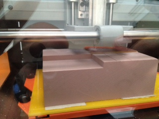
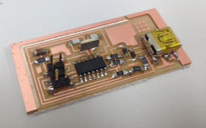
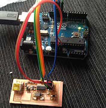
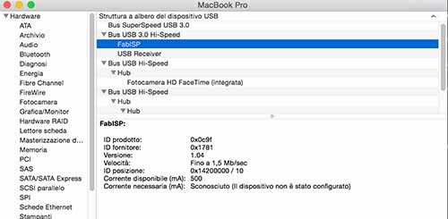

4 - Electronics Production
Intro
Wikipedia says that "In-system programming (ISP), also called In-Circuit Serial Programming (ICSP), is the ability of some programmable logic devices, microcontrollers, and other embedded devices to be programmed while installed in a complete system, rather than requiring the chip to be programmed prior to installing it into the system.". So an ISP is a board the allows to program other boards. In our case we are making a board to program AVR microcontrollers. For this week we will have to make an ISP using a milling machine and then soldering the components on it.
Making an ISP programmer
As designing circuit is very complex and the focus of this week was to learn the skill to produce electronics I started from the board shared on the Fabacademy website.

I used a Roland monoFab SRM-20 milling machine that is in the Frosinone Fablab. The task was a good way to approach the milling machine. To mill something you need to make a GCODE for the specific machine to tell it what is the path to follow. To mill a circuit you have mainly 2 jobs to do. Make the traces and the (eventually) drill holes and cut the board away from the plate.This is made with two different tools of the machine: one is 1/62" so is able to remove small amounts of copper so the traces could be nearer and the board could be smaller, 1/32" to cut and drill holes. So we used two different png representing the traces(left) and the border(right) of the board. The black part will be milled.


To make the GCODE we used the fabmodules. It is a very useful tool. You can upload your png, vector or 3d model and make the GCODE for different machines.This are the steps for the traces:
- I uploaded the traces png file
- I selected Roland Mill (.rml) as the output format.
- Then I set the kind of process: PCB traces (1/64)
- I set the correct output machine (SRM-20) and xmin ymin to 0
- In the process panel I set an higher offset (5) to have more spaces between the traces
- calculate to generate the path. It is important to check if everything is ok (maybe some traces are too close or some detail was not calculated)
- save the file
To cut the borders I followed the same process but, at step 3, I chose PCB outline (1/32) and I didn't change the offset at step 5. I changed the tool placing the 1/32" one. I set again the Z of the machine as it may vary changing the tool.
Before using the machine I left it working for 30 min to warm up. I placed a FR-1 copper plate on a sacrificial boad that was already inside the machine. The important thing is to check that everything is parallel to the build plate. I mounted the 1/64" tool. Then I set up the X,Y and Z home with the control panel of the machine.

Then I soldered the components on the PCB. I never soldered SMD components. Moreover some components had packages really small difficult to solder. At first I melted a little bit of solder on the pad. Then I placed the component and melted again the solder (touching both the stain and the component with the point of the soldering iron). The important thing is to put very little solder or it will go over different pads making short circuits. Howeber if it is too much you can use the desoldering pump or the desoldering wire.In the first case you have to melt the solder and pull it out with the pump. In the second case the excess of solder will stick on the wire.
Using the continuity test function of the multimeter I tested that all the connections were working and the absence of short circuits. I made the smoke test and it don't made smoke :D

Programming the FabIsp
Even if the ISP is used to program, at the beginning it needs to be programmed.To program the ISP I followed this tutorial. As I'm on a Mac I installed Cross Pack AVR that has avrdude and gcc. I downloaded the firmware. Inside there is the makefile file that contains all the commands and parameters to program the board. While the real code is in the file main.c.
To tell avrdude to use Arduino as ISP I changed this line in the Makefile:
AVRDUDE = avrdude -c arduino -P /dev/tty.usbmodem1421 -p t44 # edit this line for your programmer
For the connections I followed this tutorial http://highlowtech.org/?p=1695 and this reference http://arduino.cc/en/Reference/SPI.

The connection worked fine however I had this error and I wasn't able to solve it.
I searched a lot in different forums and, even if I didn't find the exact solution, I found out that people had many problems using Arduino as ISP so I decided to use another programmer to see if the problem was in my board. I tried with the usbasp programmer and it worked fine.
I changed a line in the Makefile to tell to the system to use usbasp:
AVRDUDE = avrdude -c usbasp -p $(DEVICE) # edit this line for your programmer
After the make clean and make hex command I sent the make fuse command with this output:
Then I checked my system to see if the FabISP was recognized.

The FabISP was recognized so it was ready to be used as a programmer and it is recognized by the Arduino IDE as USBTinyISP.
 Attribution, non-commercial, share alike.
Attribution, non-commercial, share alike.